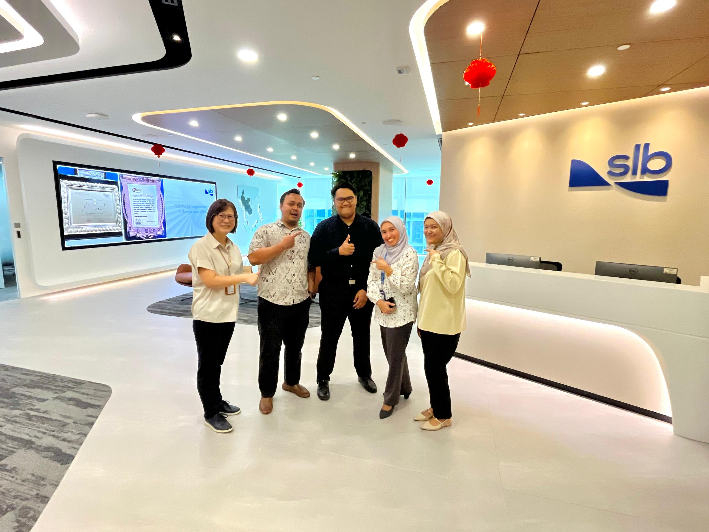
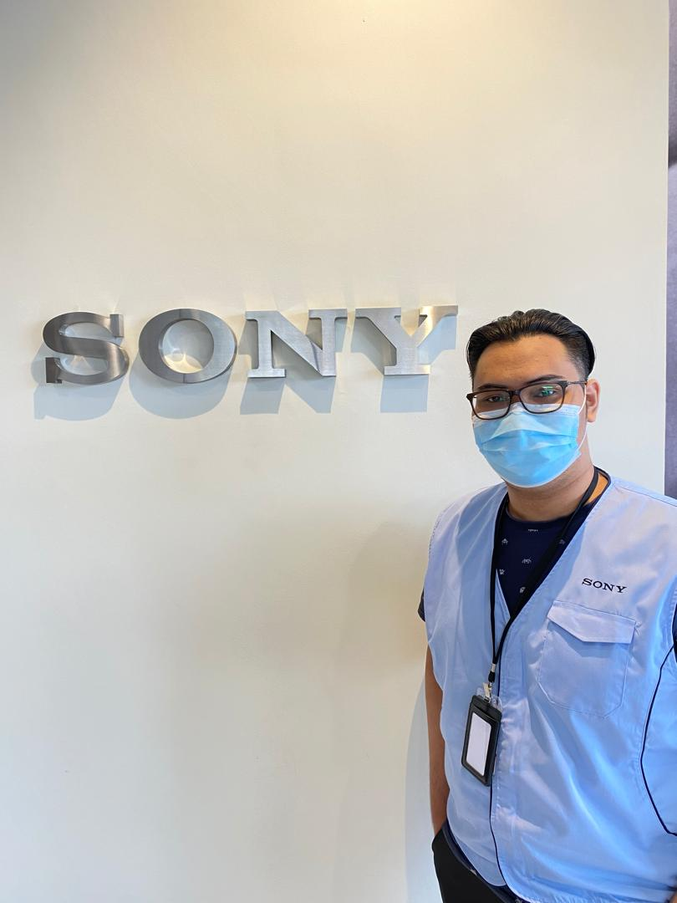

As a Data Engineer Intern at SLB, I have the opportunity to work with their advanced technology and real-world oil and gas data. This exposure has fueled my eagerness to learn new skills and broaden my knowledge. I have also had the chance to contribute to both internal projects and external that benefit my team. My role involves transforming data, ingesting data, developing pipelines to ensure data compliance and creating dashboards for visualization.
The Data Management Team provides support to clients using our product DELFI. DELFI is a cloud-based digital platform designed to revolutionize how energy companies operate across the exploration, development and production lifecycle. It offers a collaborative data-driven environment that integrates advanced digital technologies such as artificial intelligence (AI), machine learning and advanced analytics to optimize workflows and improve operational efficiency.
September '21 - February '22
IT Support Intern
in IT & Network Team @ Sony

During my internship as an IT Support Intern, I was actively involved in a variety of technical support and infrastructure-related tasks. My responsibilities included providing end-to-end support for workstations, such as formatting PCs, installing and configuring essential software, troubleshooting hardware-related issues, and preparing new laptops for deployment to end users.
I also contributed to network support operations by assisting in troubleshooting network issues, monitoring network performance, and participating in project-based activities to enhance the organization's IT infrastructure. This gave me valuable exposure to real-world networking environments and tools.
I supported the compliance team in handling virus incidents, conducting internal audits, and generating detailed reports to ensure IT operations adhered to security policies and standards.
As part of the helpdesk team, I provided daily technical support to staff, including reinstalling Office 365, resolving user issues, and addressing common system errors. This role strengthened my problem-solving skills and improved my ability to communicate technical solutions effectively to non-technical users.
Overall, this internship allowed me to develop a solid foundation in IT support while gaining practical experience in both hardware and software troubleshooting, network management, and compliance support.